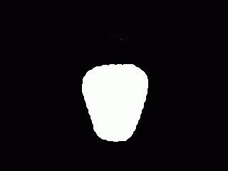
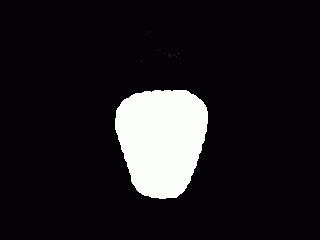
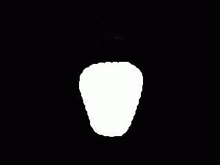
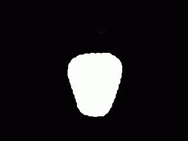
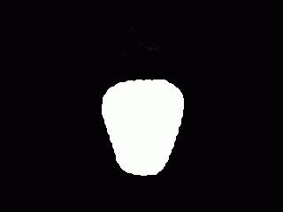

Merge your face into an other one.
Work in progress
Please turn your camera on, before to proceed!
Align your head, then press snapshot, reload and blend.
Snap Photo
Reload
blend
iterate
paste
reset

Poisson lib for the merge is taken here : http://rest-term.com/labs/html5/poisson.html
 


